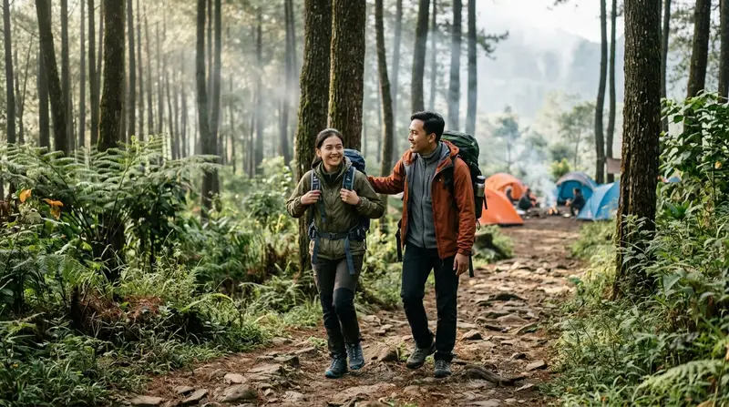

Perlengkapan camping di Bedengan Malang meliputi tenda, sleeping bag, jaket hangat, jas hujan, alat masak, penerangan, dan kantong sampah, disesuaikan dengan udara dingin dan jalur berbatu.
Ringkasan Inti
- Bedengan adalah kawasan hutan pinus dan sungai, sehingga udara malam umumnya dingin dan kelembapan dapat tinggi.
- Area perkemahan hanya sekitar 2,5 hektare, jadi bawa tenda secukupnya.
- Prioritaskan tenda, alas, sleeping bag, penerangan, dan jas hujan.
- Bawa tas yang nyaman karena pengunjung perlu berjalan dari gerbang.
- Bawa pulang semua sampah.
Perlengkapan apa yang wajib dibawa ke Bedengan?
Perlengkapan wajib untuk camping di Bedengan Malang adalah tenda, alas tenda, sleeping bag, jaket hangat, jas hujan, senter atau headlamp, air minum, dan kantong sampah.
Tenda sebaiknya sesuai jumlah anggota dan tahan angin serta hujan. Alas tenda atau matras melindungi dari tanah yang dingin dan lembap. Sleeping bag membantu menjaga suhu tubuh pada malam hari, sementara headlamp membuat kedua tangan tetap bebas saat memasak atau memeriksa tenda.
Tambahkan perlengkapan pendukung seperti tali, pasak cadangan, korek atau pemantik, kotak P3K, dan power bank. Skripsi Universitas Muhammadiyah Malang tahun 2024 mencatat area perkemahan di Bedengan seluas sekitar 2,5 hektare, sehingga kelompok besar sebaiknya mengatur jumlah tenda agar tidak memakan ruang berlebih dan mengganggu pengunjung lain.
Bagaimana menyiapkan pakaian untuk udara dingin dan hujan?
Untuk kemah di Bedengan Malang, siapkan pakaian berlapis, jaket hangat, kaus kaki cadangan, dan jas hujan karena suhu dataran tinggi dapat turun pada malam hari dan cuaca bisa berubah.
Pakaian berlapis lebih fleksibel dibanding satu pakaian tebal. Lapisan dalam menyerap keringat, lapisan tengah menahan hangat, dan lapisan luar melindungi dari angin atau hujan. Bawa pakaian kering terpisah untuk tidur agar tubuh tetap hangat.
Alas kaki sebaiknya tertutup dan tidak licin karena jalur berbatu dan tanah dapat basah. Simpan pakaian dalam kantong kedap air. Jika hujan turun, barang yang basah akan sulit kering di tenda.

Perjalanan membawa perlengkapan camping menyusuri jalur pinus asri menuju area tenda Bedengan.
Apa saja perlengkapan masak dan makanan yang aman dibawa?
Perlengkapan masak untuk Bedengan Malang yang umum dibawa meliputi kompor portabel, gas, panci kecil, alat makan, korek, dan makanan praktis yang tahan di udara dingin dan lembap.
Pilih makanan yang sederhana, tidak mudah basi, dan tidak banyak sampah. Bawa wadah tertutup agar tidak menarik hewan liar. Air minum sebaiknya dibawa dari rumah dalam jumlah cukup. Jangan mengandalkan air sungai untuk diminum tanpa penjernihan yang benar.
Gunakan kompor di area terbuka yang aman, jauh dari tenda dan daun kering. Jangan memasak di dalam tenda karena berisiko kebakaran dan keracunan gas. Pastikan bara atau api benar-benar padam sebelum ditinggalkan, serta ikuti aturan pengelola mengenai api.
Bagaimana mengemas barang agar mudah dibawa dari gerbang?
Kemas perlengkapan ke Bedengan Malang dalam tas ransel atau tas jinjing yang nyaman dibawa jalan, karena pengunjung umumnya berjalan melewati jalur berbatu dari gerbang menuju area kemah.
The Jakarta Post pada 2018 melaporkan jalur berbatu sekitar 200 meter dari gerbang. Kondisinya dapat berubah, tetapi persiapan yang baik tetap penting. Bagi beban secara merata antaranggota kelompok. Taruh barang berat dekat punggung dan barang yang sering dipakai pada kantong luar.
Hindari koper kaku dan barang pecah belah. Beri label pada tas agar tidak tertukar. Dengan pengemasan yang rapi, waktu mendirikan tenda lebih singkat dan risiko cedera akibat membawa barang terlalu berat dapat berkurang.
Perlengkapan keselamatan dan kebersihan apa yang tidak boleh terlewat?
Perlengkapan keselamatan dan kebersihan untuk Bedengan Malang meliputi kotak P3K, obat pribadi, tisu basah, sabun, kantong sampah, dan penerangan, karena fasilitas dasar tidak selalu mencukupi saat ramai.
Fasilitas seperti toilet, musala, aula, dan gazebo memang tersedia menurut Popbela, tetapi kondisinya dapat bervariasi pada hari libur. Bawa tisu, hand sanitizer, dan sabun secukupnya. Siapkan obat pribadi bagi anggota yang memiliki kebutuhan khusus.
Simpan kontak darurat dan informasi pengelola. Karena berenang di sungai tidak disarankan akibat banyaknya bebatuan, hindari membawa perlengkapan renang sebagai rencana utama. Bawa kembali seluruh sampah, termasuk bekas makanan dan kemasan.
Untuk gambaran umum lokasi, pelajari juga panduan aktivitas dan tips aman di Bedengan Malang.
FAQ
Secara umum, membawa tenda sendiri lebih terjamin. Ketersediaan sewa dapat bervariasi, sehingga pengunjung perlu menanyakan kepada pengelola sebelum berangkat.
Perlu. Cuaca di kawasan pegunungan dapat berubah cepat, dan jas hujan juga melindungi dari embun serta angin malam.
Umumnya boleh, tetapi aturan dapat berbeda. Pastikan penggunaan api sesuai arahan pengelola dan lakukan di area terbuka yang aman.